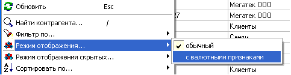

При работе с товаром
закупаемым за валюту или привязанным к курсу валюты для удобства работы с
постоянно меняющимися курсами в справочнике контрагентов есть специальный
режим отображения дополнительных "валютных полей". Если он выбран, то
появляются доп.поля и меню по работе с ними.
Данные пункты меню выполняют одинаковые действия
с карточками товаров, только первый пункт для товаров выбранного контрагента,
а второй - для товаров всех контрагентов. Они позволяют выставлять и обновлять
данные по типам курсов, валюте расчета и валюте товара в карточке контрагента,
а затем автоматически проставить на товары, последняя партия которых поступала
от данного контрагента. При этом появляется диалоговое окно, в котором можно
выбрать какие именно обновить поля в карточках товаров.